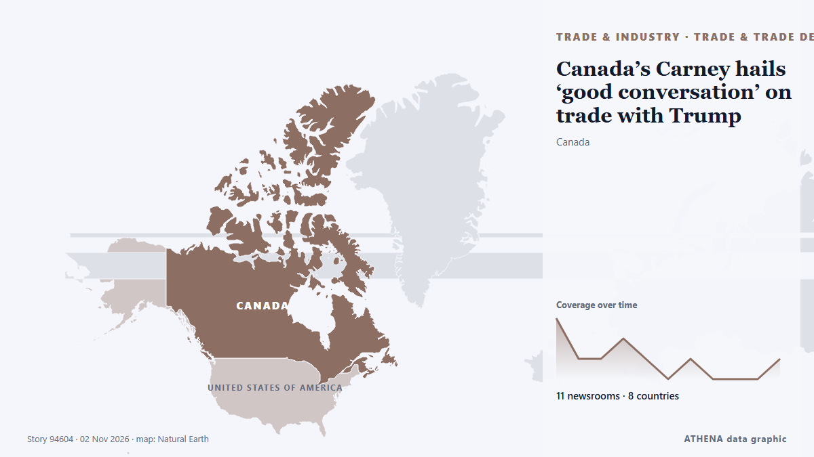

Торговля и соглашения
СпонсорПри поддержке  Cybernetics and Artificial Intelligence Lab Welcome to the Cybernetics and Artificial Intelligence Laboratory, established at the Department of Business Administration of the National
Cybernetics and Artificial Intelligence Lab Welcome to the Cybernetics and Artificial Intelligence Laboratory, established at the Department of Business Administration of the National
| 20 окт. | 0 |
|---|---|
| 21 окт. | 0 |
| 22 окт. | 0 |
| 23 окт. | 0 |
| 24 окт. | 0 |
| 25 окт. | 0 |
| 26 окт. | 0 |
| 27 окт. | 0 |
| 28 окт. | 0 |
| 29 окт. | 7 |
| 30 окт. | 6 |
| 31 окт. | 4 |
| 1 нояб. | 3 |
| 2 нояб. | 2 |
Заголовки приводятся на английском языке, как они были опубликованы.

Canada’s Carney hails ‘good conversation’ on trade with Trump
High-level trade talks between the US and Canada broke down in August, prompting a series of tariffs from both sides. из Free Malaysia Today
South Korea exports nearly double in October, strongest growth since 1974
SEOUL: South Korea's exports nearly doubled in October from a year earlier, beating market expectations and marking the sharpest increase in more than 50 years, trade data showed on Sunday. из New Straits Times
Russia extends diesel export ban until January
The Russian government extended on Saturday a temporary ban on diesel fuel exports until the end of January 2027, following a previous announcement by Russian Deputy Prime Minister Alexander Novak. из AzerNews
South Africa braces for AGOA review amid US trade talks
South Africa is preparing for possible changes to its eligibility under the African Growth and Opportunity Act (AGOA), while keeping trade negotiations with the United States ongoing, Foreign… из CGTN (World)
Exhibitions, trade delegations proposed with Sri Lanka
Chamber proposes single-country shows, outlets in both markets as envoy says ties must yield commercial benefit. из Express Tribune
Opportunities for All: Small enterprises shine at the Canton Fair
70 years on, why global buyers keep coming back to Canton Fair. из CGTN (China)
Expect Gusts Up to 85 km/h and Rain in Costa Rica This Weekend
Gusts could reach 85 km/h in Costa Rica's mountains and northern Guanacaste today, with rain in the Caribbean and storms in the South Pacific. из The Tico Times
Letter from China: The one-person company, the port and the shopping bag, snapshots from Hainan FTP
The province’s services exports increased to around $6.02 billion in the reporting period. из TASS (English)
Over 4,500 students participate in technical symposium at KITSW
The World Health Organization (WHO), the World Intellectual Property Organization (WIPO) and the World Trade Organization (WTO) will hold the 13th Joint Technical Symposium on “Enabling Ecosystems… из WTO news
Trump declares robot imports a national security threat
President orders trade talks on foreign-made factory robots, threatens tariffs. из Ars Technica
China’s Xi, Swiss president praise trade deal that boosts access
The accord will give Switzerland unusually broad access to Chinese markets, contrasting with trade barriers imposed by the US and European Union. из Free Malaysia Today
Int’l conference on “New World Order” opens in Cambodia to debate geopolitics, tech and trade
An international conference on the "New World Order" convened here in the Cambodian capital yesterday, fostering critical discussions on global geopolitics, regional cooperation, digital technology… из Khmer Times
DRC seeks economic partnership with Russia — president
Felix Tshisekedi emphasized that the DRC's future development depends on restoring peace in the eastern part of the country. из TASS (English)
Canadians weigh ‘ever closer’ ties to the EU
European or American first? What do the Canadians think of a future close to EU? из Euractiv
Uzbekistan–Türkiye Trade Agreement to Cover More Products
Uzbekistan and Türkiye have agreed to expand the list of goods eligible for preferential trade treatment and signed agreements on. из The Times of Central Asia
Ghana won’t face fuel queues; supply assured through December – CBOD
Ghana will not experience fuel queues through December, the Chief Executive Officer of the Ghana Chamber of Bulk Oil Distributors (CBOD), Dr Patrick Kwaku Ofori, has assured. из MyJoyOnline
Azerbaijan continues making demands on Armenia
Armenia has reportedly received no new fuel supplies from Azerbaijan in recent months, despite earlier shipments of gasoline and diesel that marked a significant development in trade relations… из AzerNews